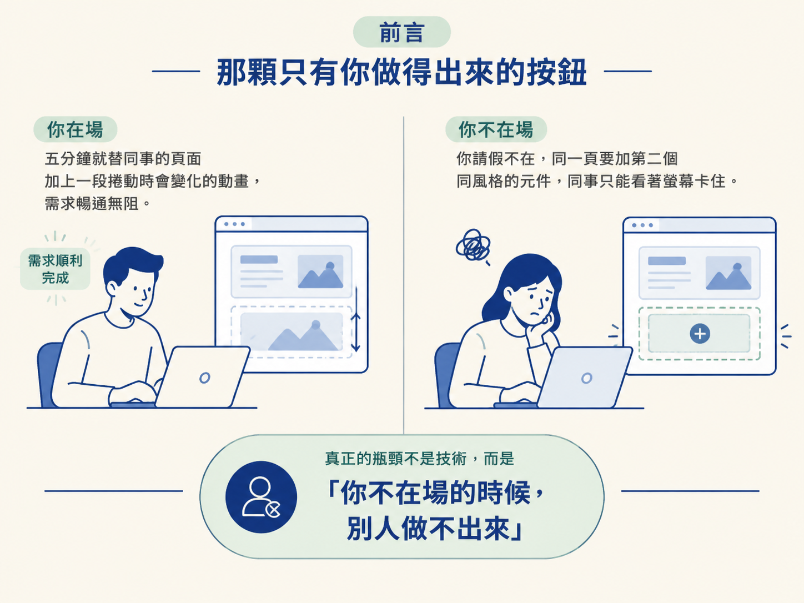
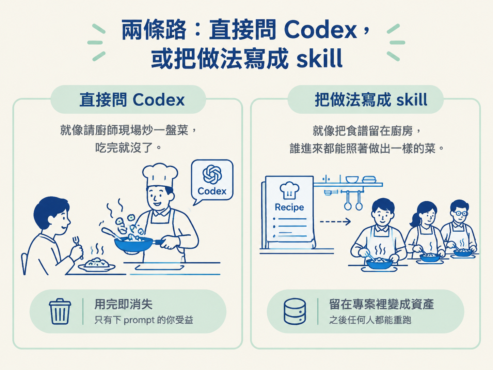
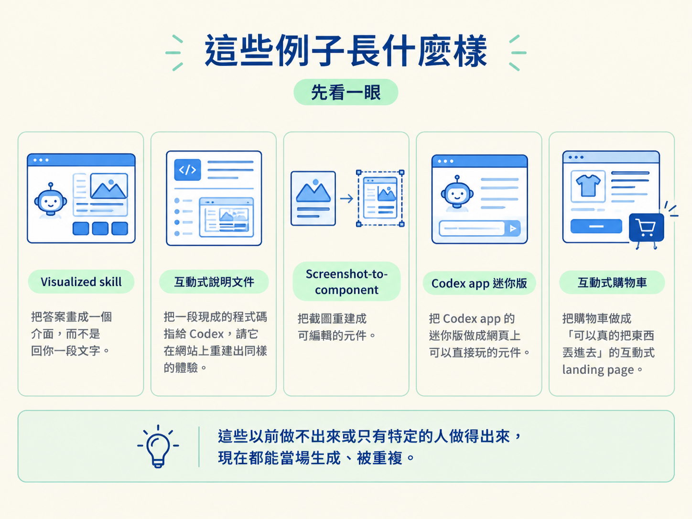

讀完這一篇，你能說清楚 living frontend 是什麼、它跟「用 Codex 更快寫一般前端」差在哪裡，以及為什麼這種能力應該寫成住在 repo 裡的 skill。
想像一個很常見的場面。你花了一整個下午，替某個頁面做了一段捲動時會跟著變化的動畫，元件和樣式都是親手刻的。同事看到很喜歡，說他那一頁也想要同樣的效果。你人在座位上，五分鐘就幫他弄好了。
隔天你請假，他又需要加第二個同風格的東西。這次沒人會做，事情就卡在那裡。
問題不在你技術不好，恰恰相反，你在場的時候，這件事根本不是問題。真正的瓶頸是：你不在場的時候，別人做不出來。這一課要講的東西，就是為了拆掉這個瓶頸。

它不是單純「讓 Codex 把前端寫得更快」，而是讓 Codex 當場生出一種原本不存在的互動，並且把「怎麼生」這件事留在專案裡，讓下一個人也做得出來。這種東西，課程裡叫做 living frontend。
先把名詞講清楚。所謂 living frontend，意思是 Codex 不再只是產生「一般的前端」，而是當場創造全新的互動型態、當場生出新的元件。你可以請它用一種全新的方式來呈現網站上的圖片或內容，而不是走傳統那條路。
這裡有兩個關鍵字：當場與全新。它不是在既有版型裡填空，而是發明一種你原本沒有的呈現方式。
這件事以前根本做不到。你可以是很強的工程師，CSS 動畫熟到不能再熟，親手做出各種滑順的效果。但只要需求變成「隨時替這個專案加上新的元件」，這套做法就只有「你自己在用」的時候行得通。換成別人想要同樣的風格，他就非得把你本人請來不可。
一個人會做，跟一個專案能反覆生產，是兩件事。
所以 living frontend 的價值，不在「CSS 寫得更花俏」，也不在「前端做得更快」。它多出來的是以前想不到、也做不出來的新體驗與互動方式。把這種能力留在專案裡的機制，就是 skill。
當你想讓 Codex 做出這些新的互動模式時，面前有兩條路。
第一條很直接：當下就請 Codex 幫你做。第二條，是把它寫成一個住在專案裡的 skill，讓之後任何一個想做出同樣東西的人，都能自動做到。
這兩條路解的是不同層次的問題。直接問，解的是「我現在這一頁要一個新東西」；寫成 skill，解的是「這個專案以後要能一直長出這種東西」。
打個比方：直接問像請廚師現場為你炒一盤菜，吃完就沒了；寫成 skill 像把食譜留在廚房，誰進來都能照著做出一樣的菜。你當然可以每次都用嘴巴點菜，但如果你想讓這個廚房在你不在的時候照樣出菜，就得把食譜寫下來。

| 直接請 Codex 做 | 寫成 repo 裡的 skill | |
|---|---|---|
| 誰能受益 | 只有下這個 prompt 的你 | 之後任何進到這個專案的人 |
| 能不能重複 | 要重來就得再想一次、再問一次 | 任何人照著 skill 就能重跑一次 |
| 成果留在哪 | 留在這次的對話與產出裡 | 留在專案裡，變成團隊的資產 |
| 適合什麼 | 一次性的、只有你要的嘗試 | 會被反覆需要的互動與元件 |
你可能會想：反正我一個人做，直接問 Codex 不就好了，何必多寫一個 skill？短時間內確實是這樣。
但 living frontend 真正有意思的地方，在於它把能力從個人身上移到專案身上。一個好的工程師一走，他手刻的那些互動就沒人接得住。可是如果那些互動的「做法」以 skill 的形式留在 repo 裡，它就變成大家共用的工具，誰都拿得到。
這也是後面幾課會反覆出現的分工：skill 負責記住「怎麼做出這種元件」，Codex 負責照著 skill 真的做出來。少了 skill，你每次都得從零開始描述需求；有了 skill，你只要說一句「照這個來」，連風格都能維持一致。
課程裡舉了幾個實際例子，先讓你對 living frontend 有個畫面，細節留給後面幾課。
有一個叫 visualized skill 的東西，它會把答案畫成一個介面給你看，而不是回你一段文字。還有互動式的說明文件，做法是把一段現成的程式碼指給 Codex，請它在網站上重建出同樣的體驗。再來是能把截圖重建成可編輯元件的 screenshot-to-component，以及把 Codex app 的迷你版做成網頁上可以直接玩的元件。最後還有一個比較跳脫的例子：一個把購物車做成「可以真的把東西丟進去」的互動式 landing page。

這些例子的共同點是：換作從前，它們要嘛做不出來，要嘛只有特定的人做得出來。現在因為有 Codex，它們可以當場被生成、被重複。
Living frontend 指的是 Codex 當場創造出全新的互動型態與元件，而不是把既有版型填得更漂亮。它真正解掉的問題是「只有原作者做得出來」：因為互動的做法可以寫成住在 repo 裡的 skill，之後任何人都能重複呼叫，能力就從一個人身上轉移到整個專案身上。它的價值不在「前端做得更快」，而在「長出以前做不到的互動」。
抓到這個定義之後，下一步是看看它實際長什麼樣子。下一課會拆解兩個最貼近「輸出就是一個介面」的例子：把答案畫成圖的 visualized skill，以及「指著程式碼、請 Codex 在新環境重建體驗」的互動文件。